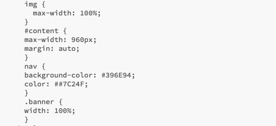
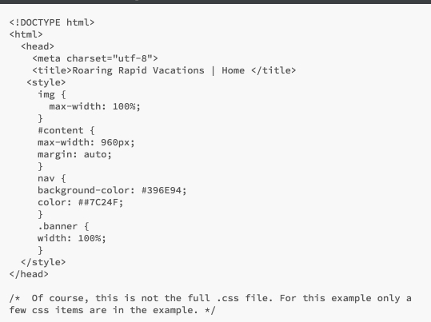
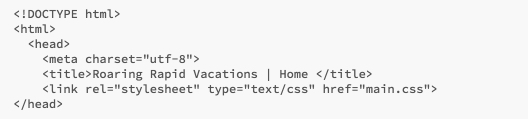

External CSS
Activity Instructions
Estimated Time: 15 minutes
Until now, we have been using an internal stylesheet. This is what Khan Academy teaches, and it is a good place to start learning because it keeps everything on one page.
Eventually though, you can start running into some limitations of internal CSS:
- Your html code page becomes increasingly long and difficult to discover errors or to see what you have on the page
- When you add more than one page to your site, keeping your styling in sync between ALL of your pages becomes quite a chore as every page will have a copy of the styles in the <head>!
External style sheets solve this problem by removing the CSS from the page and into a separate file of type .css After removing the css you then have to <link> your html to the css so it can find the styles.
Step 01
Make your CSS external by first creating a new file in your editor and saving it as main.css.
Step 02
Next copy your CSS out of your index.html file (it will be everything in the <style> block, but not the <style> tags themselves) and pasting the CSS into your new main.css file.

Example CSS file
Step 03
Now link your css to your html page by adding a <link> tag. First remove the <style> block from the <head> of your document. The link will go in the place of it. A link tag has 3 required attributes: rel, type, and href. Two of the attributes will always be the same for CSS, the third you will have to provide. In this case the line should look like this (assuming you named your file main.css):
<link rel="stylesheet" type="text/css" href="main.css" >

HTML file with internal CSS (before we add the link)

HTML file with link to external CSS (after we add the link)
Step 04
After you finish, make sure that you check your index.html file in your browser to make sure that your css file is connecting properly. If it is not showing the same as before you moved everything off of the .html file onto the .css file, you will need to do some troubleshooting. Here are a few things that can easily happen to make things go wrong:
- Check to make sure your links is typed properly... check your spacing... and check to make sure that your link is in the <head> </head> section.
- make sure that you did not leave the <style> </style> links on the .html page
- make sure that you did not transfer any <html> links to the .css page.... at the top or the bottom of the code.... that is a sure fire way to make things not work properly... no html tags can be on the .css page.
Grading
This activity will be graded using the following rubric (10pts):
- All CSS (including the <style> tags has been removed from the HTML file and placed into an external CSS file
- CSS is linked to the html file and styles still show (the link works properly)
Go to the next page to access "W10.01 External CSS" and click "Upload" to submit this assignment.